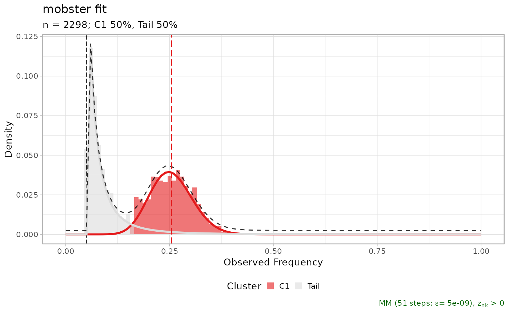

MOBSTER fit for the LUFF76 lung sample; this object is the result of running `mobster_fit` function on the input data described in the main MOBSTER paper. The data consists of diploid mutations for the sample available at the Comprehensive Omics Archive of Lung Adenocarcinoma (http://genome.kaist.ac.kr/).
Usage
data(LUFF76_lung_sample)Examples
data(LUFF76_lung_sample, package = 'mobster')
print(LUFF76_lung_sample$best)
#> ── [ MOBSTER ] n = 2298 with k = 1 Beta(s) and a tail ─────────────────────────
#> ● Clusters: π = 50% [Tail] and 50% [C1], with π > 0.
#> ● Tail [n = 1076, 50%] with alpha = 2.
#> ● Beta C1 [n = 1222, 50%] with mean = 0.25.
#> ℹ Score(s): NLL = -3095.24; ICL = -5784.22 (-6144.04), H = 359.82 (0). Fit
#> converged by MM in 51 steps.
plot(LUFF76_lung_sample$best)
